7095B59 AIR BAG MODULE with BLIND (one- ) (head),bag left or right - R.R. with interfering components removed
- Path
- Procedures > 70 FITTINGS > 7095 MISCELLANEOUS BODYWORK > 7095B interventions on mechnical parts > 7095B59 AIR BAG MODULE with BLIND (one- ) (head),bag left or right - R.R. with interfering components removed
- Kind
- repair procedure (removal / refitting; the operation number is the code)
- Applies to
- all engines; all production periods
- Interactive page
- https://sloeber94.github.io/elrnDB-a156/en/#/3239002
Applies to: all engines; all production periods
Applies to: all engines; all production periods; only with equipment: Station Wagon
 Removing
Removing
 Refitting
Refitting1. Disconnect the electrical connections.
 | Name | Connector |
|---|---|---|
1 | Driver's Head Bag |
| Name | Connector |
|---|---|---|
1 | Passenger Head Bag |
2. Undo the rear pipe retaining nuts.
3. Undo the bracket retaining nut
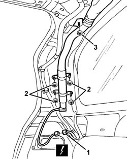
Applies to: all engines; all production periods; only with equipment: Station Wagon
1. Undo the front link retaining bolt.
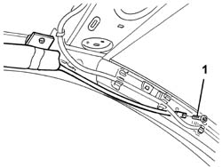
Applies to: all engines; all production periods; only with equipment: Station Wagon
1. Undo the curtain retaining bolts.
2. Remove the curtain airbag module
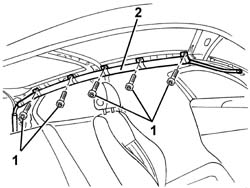
Applies to: all engines; all production periods; only with equipment: Station Wagon
1. Undo the bolts if necessary.
2. Remove the rear bracket
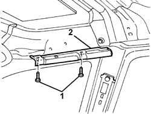
Applies to: all engines; all production periods; only with equipment: Station Wagon
Refitting
RemovingObserve the following precaution.
Detach the removable part of the adhesive label from the new module and put it in a specific file recording the vehicle details (model, registration data, chassis no.) and the serial no. of the old module. This file should be kept for future checks.
A new label is supplied together with the module to be stuck on top of the existing one. It must be perforated first by the month, 10 years after the year in which the module is fitted (e.g. for 2000, this will be 2010).
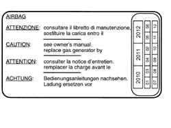
Applies to: all engines; all production periods; only with equipment: Station Wagon
If removed, fit the rear bracket and secure it with the bolts.
 | Fastening | Component | Ø | Value (daNm) |
|---|---|---|---|---|
- | Bolt | REAR BRACKET | M6 | 0.8 |
1. Position the head bag module
2. Tighten the rear pipe retaining nuts
| Fastening | Component | Ø | Value (daNm) |
|---|---|---|---|---|
2 | Bolt | HEAD BAG UNIT | M6 | 0.8 |
3. Tighten the bracket retaining nut.
| Fastening | Component | Ø | Value (daNm) |
|---|---|---|---|---|
3 | Nut | HEAD BAG UNIT | M6 | 0.8 |
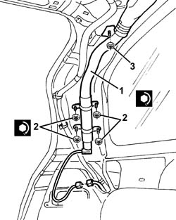
Applies to: all engines; all production periods; only with equipment: Station Wagon
1. Position the head bag anchorage brackets
2. Tighten the bracket retaining bolts
| Fastening | Component | Ø | Value (daNm) |
|---|---|---|---|---|
2 | Bolt | HEAD BAG MODULE | M6 | 0.8 |
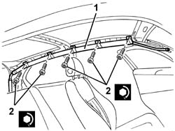
Applies to: all engines; all production periods; only with equipment: Station Wagon
1. Tighten the front link retaining bolt
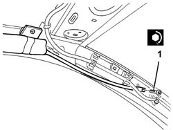
Applies to: all engines; all production periods; only with equipment: Station Wagon
Connect the electrical connection
Applies to: all engines; all production periods; only with equipment: Sedan
Removing
RefittingFollow the warnings.
1. Open the boot lid and undo the bolt shown in the diagram on the right hand side.
2. Move the electrical connection box cover.
3. Disconnect the electrical connections for the curtain Air Bag module involved.
| Name | Connector |
|---|---|---|
3 | Driver's Head Bag |
| Name | Connector |
|---|---|---|
3 | Passenger Head Bag |
4. Connect a sensor to the end of the cable coming from the Air Bag module (this operation is necessary to facilitate the subsequent fitting of the cable inside the trim).
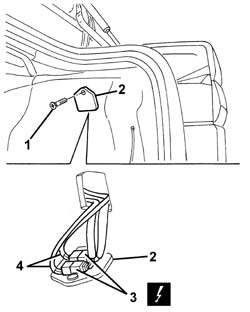
Applies to: all engines; all production periods; only with equipment: Sedan
1. Extract the cable from the rear luggage compartment lining, leaving the sensor in its place for the subsequent refitting.
2. Disconnect the electrical connections for the heated rear window.
3. Disconnect the retainer for the wiring from the support.
4. Undo the bolts fixing the Air Bag module to the rear parcel shelf.
5. Unscrew the nuts.
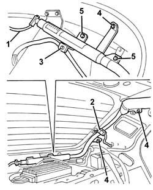
Applies to: all engines; all production periods; only with equipment: Sedan
1. Undo the bolt fixing the front rod.
2. Release the front rod from the retainer.
Applies to: all engines; all production periods; only with equipment: Sedan
1. Undo the curtain retaining bolts.
2. Remove the curtain airbag module
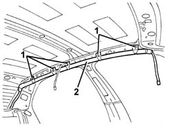
Applies to: all engines; all production periods; only with equipment: Sedan
Refitting
RemovingObserve the following precaution.
Detach the removable part of the adhesive label from the new module and put it in a specific file recording the vehicle details (model, registration data, chassis no.) and the serial no. of the old control unit. This file should be kept for future checks.
A new label is supplied together with the module to be stuck on top of the existing one. It must be perforated first by the month, 10 years after the year in which the module is fitted (e.g. for 2001, this will be 2011).
Applies to: all engines; all production periods; only with equipment: Sedan
1. Position the curtain Air Bag module.
2. Tighten the bolts fixing the curtain.
| Fastening | Component | Ø | Value (daNm) |
|---|---|---|---|---|
2 | Bolt | HEAD BAG MODULE | M6 | 0.8 |
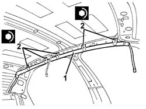
Applies to: all engines; all production periods; only with equipment: Sedan
1. Engage the front rod in the retainer.
2. Tighten the front link retaining bolt
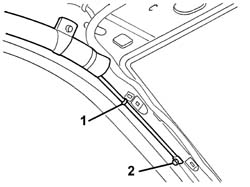
Applies to: all engines; all production periods; only with equipment: Sedan
1. Tighten the rear pipe retaining nuts
| Fastening | Component | Ø | Value (daNm) |
|---|---|---|---|---|
1 | Nut | HEAD BAG UNIT | M6 | 0.8 |
2. Tighten the bolts fixing the rear pipe.
| Fastening | Component | Ø | Value (daNm) |
|---|---|---|---|---|
2 | Bolt | HEAD BAG UNIT | M6 | 0.8 |
3. Connect the retainer for the wiring to the support.
4. Connect the electrical connection for the heated rear windscreen.
5. Using the sensor, fit the module cable in the housing in the boot lining; then remove the sensor.
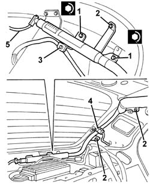
Applies to: all engines; all production periods; only with equipment: Sedan
Connect the electrical connection for the Air Bag module and attach it to the cover.
Place the electrical connections box cover in position and secure it using the bolt.